งานวัดคืนที่แปด
ชุดภาพ CASE002 · 16 ภาพที่เลือกใช้ · กดภาพเพื่อเปิดไฟล์เต็ม
สำหรับ DM — มีตัวตนและรูปลักษณ์ลับ
นี่เป็นแกลเลอรีตรวจภาพ ไม่ใช่หน้าเกมหรือผลยืนยันว่า CASE002 พร้อมเล่น ภาพฉากไม่มีตัวละครฝังไว้ การแสดงรูปลักษณ์และข้อมูลต้องขึ้นกับสิ่งที่ผู้เล่นแต่ละคนรับรู้จริง
ฉาก
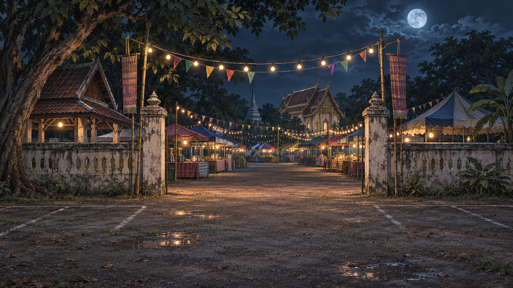
ทางเข้าและลานจอดA1, A3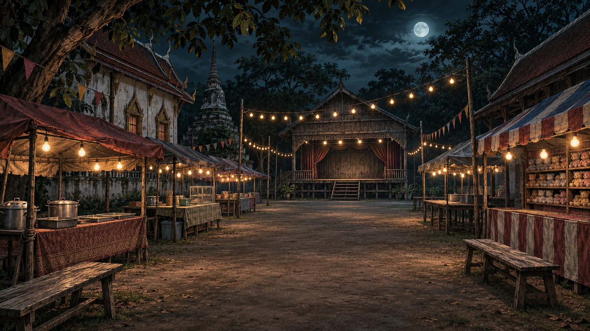
ทางเดินงานวัดA2, B1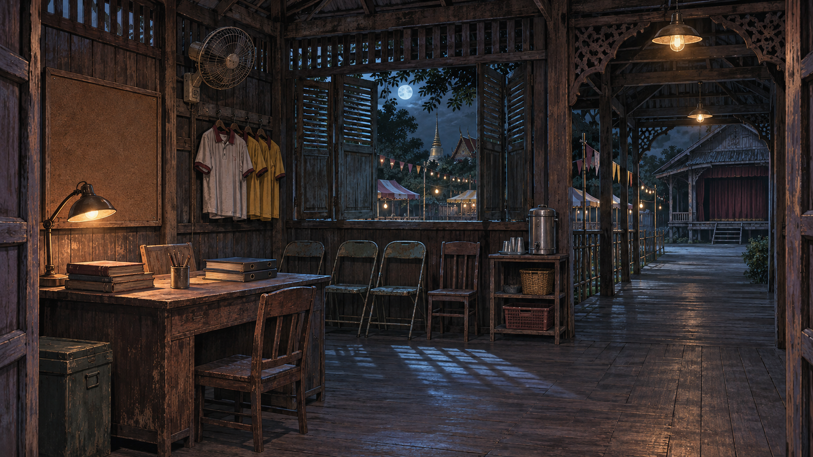
ห้องจัดงานและเอกสารB2, B4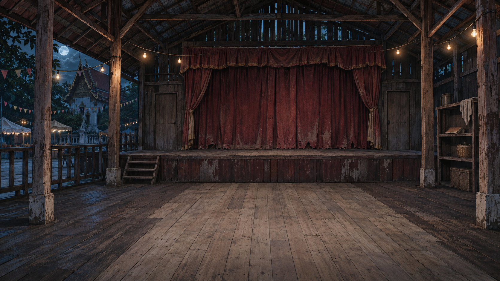
โรงมหรสพเก่าB3, B5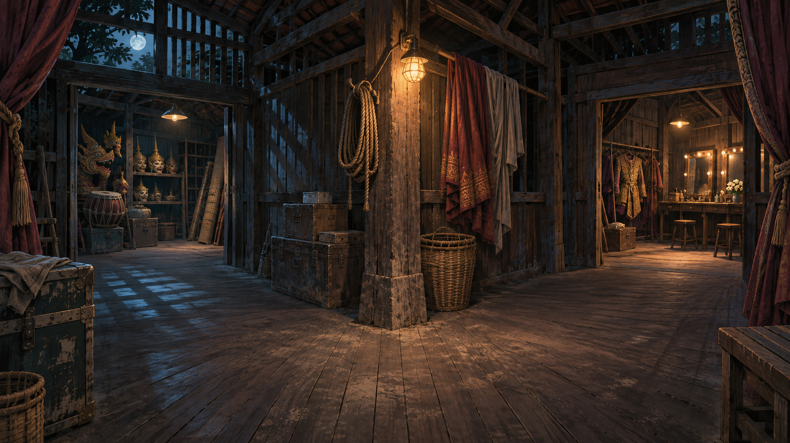
ทางแยกหลังเวทีC1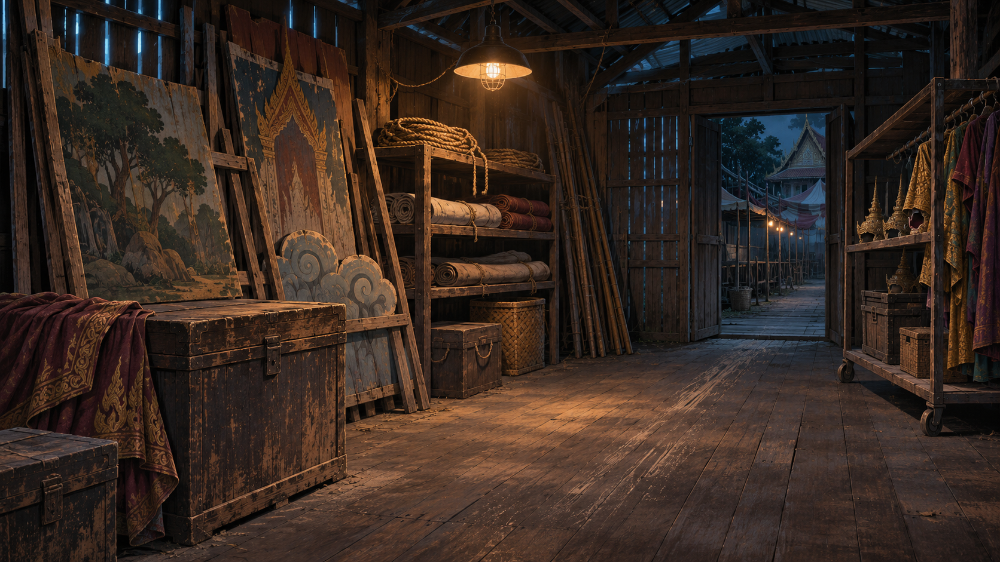
ห้องเก็บอุปกรณ์C2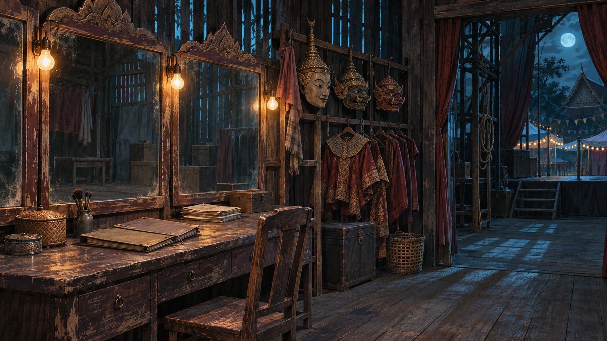
ห้องแต่งตัวC3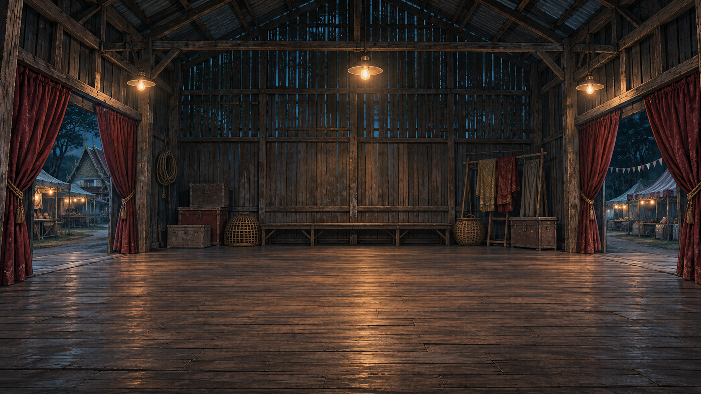
โถงกลางC4, D1, D2, D3, D4, D5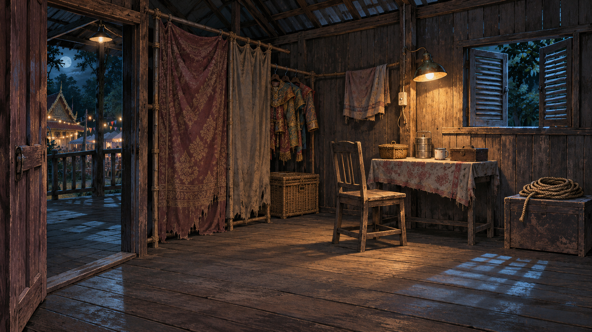
ห้องพักด้านหลังE1, E2, E3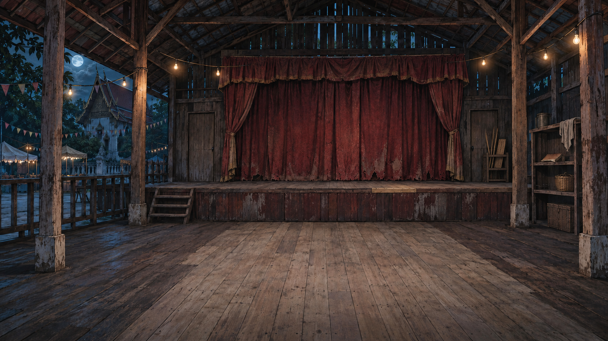
เวที FINAL — คงโครงสร้างโรงเดิมE4, F1, F2ชั้นภาพการรับรู้
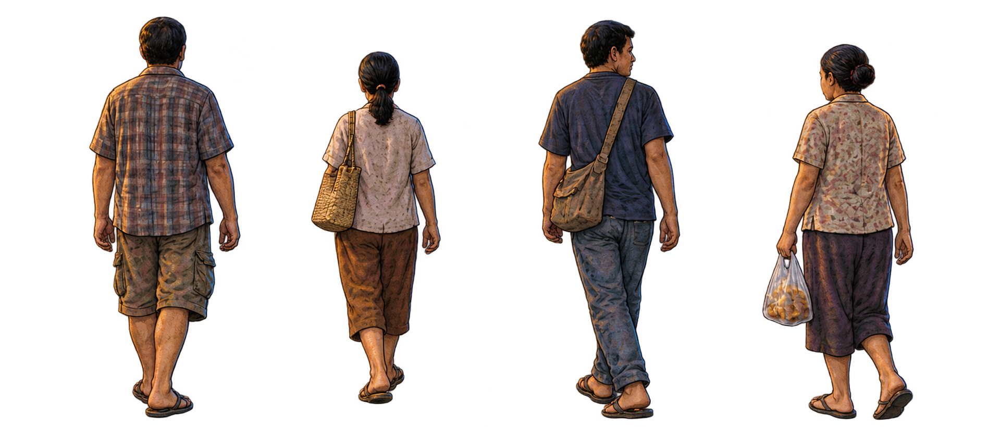
ผู้คนในงานที่รับรู้ — ชั้นภาพลวงใช้ตามผู้รับและเหตุการณ์จริงภาพสร้างด้วยเครื่องมือสร้างภาพในแอป เก็บต้นฉบับและ prompt ใน assets/source/case-002/manifest.dm.json แยกจากภาพของ CASE001 ไม่มีการเปิดใช้ภาพทั้งหมดพร้อมกันในหน้าผู้เล่น